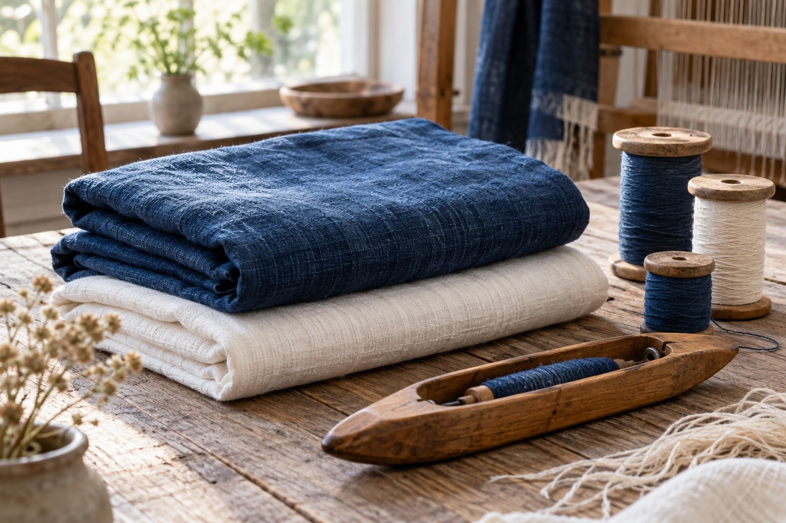

オリジナルのマフラーづくり
好きな糸を使う手織り体験です。織りたいイメージを伝え、選べる糸や制作の進め方をご相談ください。完成サイズや必要時間は個別にご確認ください。

HAND WEAVING · OSAKA
好きな糸を選び、自分だけのマフラーへ。さをり豊崎の手織り体験と、予約前の確認事項をご案内します。
保存された公式掲載情報をもとにした参考案内です。最新の料金・受付状況・実施条件は公式でご確認ください。
GUIDE 01
好きな糸を使う手織り体験です。織りたいイメージを伝え、選べる糸や制作の進め方をご相談ください。完成サイズや必要時間は個別にご確認ください。
GUIDE 02
体験料のほか、使用した糸の重量に応じた材料費がかかる仕組みです。材料費込みの固定総額ではありません。
体験料、材料単価と税区分は公式へご確認ください。糸の重さが決まる前に、合計金額を確約することはできません。
GUIDE 03
体験の受付日と通常の来店営業日は分けて確認してください。希望する日と人数を伝え、現在の受入条件を相談できます。
所在地は大阪市北区豊崎1-7-2。公式はメール、電話、携帯、Instagram DMでの予約相談を案内しています。最新の窓口は公式でご確認ください。
OFFICIAL INFORMATION
希望する内容の詳しい条件と日程は、公式ページへ。この見本では申込・予約・決済を受け付けていません。